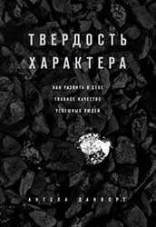
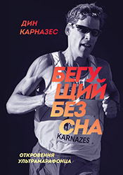

Ричард Брэнсон
К черту всё, берись и делай
240 страниц, 2011 г.
Скачать fb2 epub pdf mobi djvu
Скачать с Гугл Диска
К черту всё, берись и делай
240 страниц, 2011 г.
Скачать fb2 epub pdf mobi djvu
Скачать с Гугл Диска
Сэр Ричард Брэнсон – не просто успешный предприниматель и один из самых богатых людей планеты. Но еще и яркая, нестандартная личность. Кредо Брэнсона – брать от жизни все.
Это значит не бояться делать то, что хочешь. При этом совершенно неважно, достаточно ли у тебя знаний, опыта или образования. Если есть голова на плечах и достаточно задора в
сердце, любая цель будет по плечу. Жизнь коротка, чтобы тратить ее на вещи, которые не приносят удовольствия. Если что-то нравится – делай. Не нравится – бросай не раздумывая.
В новой, расширенной версии своего бестселлера Брэнсон предлагает новые «правила жизни», которые должны помочь каждому на пути к творчеству, развитию и самовыражению.
Книга несет огромный заряд оптимизма, мудрости и веры в возможности человека.
К черту всё, берись и делай
Энтони Роббинс
Разбуди в себе исполина
576 страниц, 1991 г.
Скачать fb2 epub pdf mobi djvu
Скачать с Гугл Диска
Разбуди в себе исполина
576 страниц, 1991 г.
Скачать fb2 epub pdf mobi djvu
Скачать с Гугл Диска
Книга рассказывает о наиболее эффективных стратегиях и конкретных приемах, пользуясь которыми, каждый человек может взять под контроль свои чувства и эмоции, телесное здоровье,
финансы, отношения с окружающими людьми - то есть обуздать все силы, играющие его жизнью и судьбой. Посвящается той неукротимой энергии, которая дремлет в каждом из вас. Разбудите ее.
Разбуди в себе исполина
Дэвид Дейда
Путь настоящего мужчины
224 страницы, 2004 г.
Скачать fb2 epub pdf mobi djvu
Скачать с Гугл Диска
Путь настоящего мужчины
224 страницы, 2004 г.
Скачать fb2 epub pdf mobi djvu
Скачать с Гугл Диска
Готовите ли вы себя к постоянным ссорам и расставаниям с подругами или же хотите пройти по жизни с одной избранницей, любимой и любящей? Если первое — изучите основы юриспруденции
и бухгалтерии, чтобы правильно составлять брачные контракты, узнайте адреса психотерапевтов, которые помогут вам избавляться от стрессов. И забудьте о карьере: вам будет не до нее.
Если же второе — прочтите эту книгу. Она учит не разрушать, а созидать; не терпеть, а понимать; не привыкать, а любить; не существовать, а жить. Именно таков путь настоящего мужчины.
Путь к познанию Женщины и Мира. Ступите на него прямо сейчас. И помните: дорогу осилит идущий.
Путь настоящего мужчины
Уоллез Д. Уоттлз
Наука стать богатым
150 страниц, 1910 г.
Скачать fb2 epub pdf mobi djvu
Скачать с Гугл Диска
Наука стать богатым
150 страниц, 1910 г.
Скачать fb2 epub pdf mobi djvu
Скачать с Гугл Диска
Эта книга - ваш путь к достижению богатства и успеха! Теперь вам доступно истинное знание о том, как богатство придет к вам! Именно эта книга легла в основу всех существующих
произведений о достижении счастья, богатства и успеха. Все известные авторы книг о счастье и успехе - Наполеон Хилл, Ог Мандино, Джо Витале и др. - открыли в нашей книге
первоисточник своих тайн. Эта книга - секрет богатства и успеха всех миллиардеров мира! Они первыми взяли идеи Уоллеса Д.Уоттлза на вооружение. Чтобы обрести богатство, требуетесь
только вы. И эта книга.
Наука стать богатым
Бенджамин Франклин
Автобиография
220 страниц, 1791 г.
Скачать fb2 epub pdf mobi djvu
Скачать с Гугл Диска
Автобиография
220 страниц, 1791 г.
Скачать fb2 epub pdf mobi djvu
Скачать с Гугл Диска
Дейл Карнеги сказал: "Если вы хотите получить превосходные советы о том, как обращаться с людьми, управлять самим собой и совершенствовать свои личные качества, прочтите
автобиографию Бенджамина Франклина — одну из самых увлекательных историй жизни". Бенджамин Франклин (17 января 1706 – 17 апреля 1790) — политический деятель, дипломат, учёный,
изобретатель, журналист, издатель и масон. Один из лидеров войны за независимость США. Первый американец, ставший иностранным членом Российской академии наук. Его биография
находится в лидерах скачивания в Интернете по всем мире и будет интересна тем, кто ищет новые идеи, интересуется историей и не стоит на месте (аннотация Лабиринт.ру).
Автобиография

Книга «Путь к величию» заключает в себе испытанную формулу, которая поможет вам достигнуть пика ваших потенциальных возможностей и прожить необычайную жизнь. Эта книга откроет вам: персональные
методики самых преуспевающих знаменитостей; действенные идеи, способные привести вашу организацию или фирму к величию; конкретные стратегии, позволяющие превращать неудачи в новые
возможности; революционные тактические приемы достижения максимальной производительности; способы обретения истинного богатства и настоящего счастья; новаторские идеи формирования
превосходного здоровья и генерации «энергетического взрыва»; средства сохранения баланса между работой и личной жизнью и ощущения большей радости от того и другого.
Путь к величию
Робин Шарма
Кто заплачет, когда ты умрёшь
221 страница, 2009 г.
Скачать fb2 epub pdf mobi djvu
Скачать с Гугл Диска
Кто заплачет, когда ты умрёшь
221 страница, 2009 г.
Скачать fb2 epub pdf mobi djvu
Скачать с Гугл Диска
Ты видишь, как жизнь проносится мимо, не оставляя тебе возможности ощутить свою значимость, обрести счастье и познать радость, которых ты заслуживаешь? Если да, то эта особенная
книга, написанная гуру по вопросам лидерства и автором серии книг "Монах, который продал свой "феррари"" Робином Шармой, — книга, изменившая жизнь тысяч людей, — станет путеводной
нитью, ведущей тебя к новой замечательной жизни. Робин Шарма предлагает простые решения 101 сложнейшей проблемы, начиная с малоизвестного метода избавления от стресса и заканчивая
действенным средством, позволяющим не только наслаждаться путешествием по жизни, но и оставить бесценное наследие своим потомкам.
Кто заплачет, когда ты умрешь
Дейл Карнеги
Как завоевывать друзей и оказывать влияние на людей
352 страницы, 1936 г.
Скачать fb2 epub pdf mobi djvu
Скачать с Гугл Диска
Как завоевывать друзей и оказывать влияние на людей
352 страницы, 1936 г.
Скачать fb2 epub pdf mobi djvu
Скачать с Гугл Диска
Эта книга даст вам наиболее ценные навыки: выведет вас из умственного тупика, даст вам новые мысли, новые мечты, новые цели; даст вам возможность легко и быстро приобретать друзей;
поднимет вашу популярность; поможет вам склонять людей к своей точке зрения; увеличит ваше влияние, ваш престиж, ваше умение добиваться своего; наделит вас способностью привлекать
новых клиентов, новых заказчиков; повысит ваше умение зарабатывать; улучшит ваши деловые качества; поможет вам сдерживать недовольство, избегать споров, поддерживать ровные и
любезные отношения с людьми; сделает вас более искусным оратором, более интересным собеседником; научит вас легко и свободно применять принципы психологии в ежедневном общении
с людьми; поможет вам поднимать деловой энтузиазм среди ваших сотрудников.
Как завоевывать друзей и оказывать влияние на людей
Brandon Carter
The beginners Guide To Being Awesome
2015 г.
Download fb2 epub pdf mobi djvu
Скачать с Гугл Диска
The beginners Guide To Being Awesome
2015 г.
Download fb2 epub pdf mobi djvu
Скачать с Гугл Диска
This book is about how to become AWESOME. Once you are AWESOME success is inevitable! Here is some more of what you will learn in this book... What's the purpose of YOUR life?
How to stop being a little bitch? How to become the "HERO" of your own life story? How to instantly motivate yourself to accomplish goals faster? How to exercise your brain to
gain almost superhuman power? And much much more.
The beginners Guide To Being Awesome
"Алхимик" - самый известный роман бразильского писателя Пауло Коэльо, любимая книга миллионов людей во всем мире. В юности люди не боятся мечтать, все кажется им возможным.
Но проходит время, и таинственная сила принимается им внушать, что их желания неосуществимы. "Добиться воплощения своей Судьбы - вот единственная подлинная обязанность человека…",
- утверждает Пауло Коэльо. Этот, ставший культовым, роман-притча способен изменить жизнь своих читателей.
Алхимик
Tim Grover
Relentless. From good to create to unstoppable
2013 г.
Download fb2 epub pdf mobi djvu
Скачать с Гугл Диска
Relentless. From good to create to unstoppable
2013 г.
Download fb2 epub pdf mobi djvu
Скачать с Гугл Диска
For more than two decades the legendary coach Tim Grover has been the mentor of such athletes as Michael Jordan, Kobe Bryant, Dwyane Wade and several dozen legends. He first
told all the psychological techniques so as not to break himself and re-create an absolutely new perfect person.
Relentless. From good to create to unstoppable
Эта книга - продолжение книги Роберта Грина "48 законов власти", в которой Грином и 50 Cent, звездой хип-хопа, самым известным в мире американским рэпером, на примерах из жизни
50 Cent выводится еще один главный закон власти - закон неустрашимости. "Ваши страхи - это своего рода тюрьма. Они сковывают вас, ограничивают вашу свободу действий. Чем меньше
вы боитесь, тем большей власти добиваетесь, и тем более полной жизнью живете" - утверждают в своей книге Грин и 50 Cent.
50th Law
Если у вас нет мечты, то эта книга для вас. Она для вас, если вы смирились с мыслью, что никогда ничего не добьетесь. Ваша жизнь гораздо больше, чем вы себе представляете.
Эта книга - ключ к потенциалу вашей жизни. Вы обретете жизнь, которая вас вознаградит, будет значимой и более плодотворной. Автору книги известны трудности. Он вырос в бедном районе,
его мать была безграмотной, а отец оставил семью. Одноклассники считали Бена тупицей, у него были проблемы с характером, и казалось, что его будущее безнадежно. Но, применяя принципы,
описанные в этой книге, Бен поднялся из трущоб на высоты, которые вызывают восхищение, и получил международное признание. Вы тоже можете это сделать. Ваша жизнь может превратиться
в такую, о которой вы даже и не мечтали.
Мысли широко
Арнольд Шварценеггер
Энциклопедия бодибилдинга
824 страницы, 1998 г.
Скачать fb2 epub pdf mobi djvu
Скачать с Гугл Диска
Энциклопедия бодибилдинга
824 страницы, 1998 г.
Скачать fb2 epub pdf mobi djvu
Скачать с Гугл Диска
Книга станет незаменимым пособием для всех, кто хочет поспорить с природой и начать строить свое тело по кирпичикам.
Психологический тренинг, комплексные программы тренировок групп мышц для начинающих и мастеров бодибилдинга, систему питания и восстановления после занятий, все тонкости подготовки
к соревнованиям, статистику последних конкурсов "Мистер Олимпия" и "Мистер Вселенная" - все это вы найдете в энциклопедии Арнольда Шварценеггера. Хотите ли вы стать звездой
бодибилдинга мирового уровня или просто решили привести в порядок отдельные группы мышц и усилить их рельефность, советы культуриста №1 в мире будут интересны и чрезвычайно полезны.
Энциклопедия бодибилдинга

What does Doing the Impossible really mean? This book is for those who have a desire to achieve greatness and are ready to take the steps to turn that desire into a reality.
Doing the Impossible is a roadmap for those who want to do something big with their lives. The book goes over 25 steps that the reader should take to re-create themselves,
identify their cause, and make history. Patrick Bet-David shares his own impossible crusade and gives key principles for anyone looking to do the same.
Doing the Impossible
Mastery is the fifth book by the American author Robert Greene. The book examines the lives of great historical figures—such as Charles Darwin, Mozart, and Henry Ford—and
contemporary leaders—such as Paul Graham and Freddie Roach—and distills the traits and universal ingredients that made them masters. In this book, Greene shares the secret path to
greatness. With this seminal text as a guide, the author tells readers how to unlock the passion within and become masters. It is an extremely powerful work on how to achieve
mastery in one’s life.
Mastery
Роберт Кийосаки
Богатый папа, бедный папа
230 страниц, 1994 г.
Скачать fb2 epub pdf mobi djvu
Скачать с Гугл Диска
Богатый папа, бедный папа
230 страниц, 1994 г.
Скачать fb2 epub pdf mobi djvu
Скачать с Гугл Диска
Основная идея, которую Кийосаки пытается донести: деньги работают по своим правилам и с ними нужно уметь правильно обращаться. Писатель делит людей на две категории:
бедные и богатые, их разница состоит в наличии активов, то есть доходов не требующих особых усилий. Очень познавательно то, как автор на примерах из реальной жизни объясняет
поведение и мышление богачей. Если вы хотите узнать, как правильно обращаться с деньгами, что такое активы и пассивы, то это издание просто обязано стать вашей настольной книгой.
Выбирать вам, какой папа будет у вашего сына — богатый или бедный.
Богатый папа, бедный папа
Роберт Грин
48 законов власти
304 страницы, 1998 г.
Скачать fb2 epub pdf mobi djvu
Скачать с Гугл Диска
48 законов власти
304 страницы, 1998 г.
Скачать fb2 epub pdf mobi djvu
Скачать с Гугл Диска
Искушенный знаток человеческой психологии, Роберт Грин поможет вам овладеть искусством обольщать и властвовать, привлекать к себе любовь и умело управлять мыслями и настроением
других людей. Следуя советам, собранным в этой книге, вы сможете превратить каждую улыбку, каждый жест, каждое слово в сокрушительное оружие, добиться безграничного доверия и
уважения вашего начальства, коллег по службе. Вы сможете очаровать любую женщину (или мужчину), а также стать уверенной в себе, яркой, преуспевающей личностью.
48 законов власти
Роберт Грин
Искусство обольщения
256 страниц, 2001 г.
Скачать fb2 epub pdf mobi djvu
Скачать с Гугл Диска
Искусство обольщения
256 страниц, 2001 г.
Скачать fb2 epub pdf mobi djvu
Скачать с Гугл Диска
Стать человеком обольстительным втайне мечтает каждый. Женщинам нравится обольщать мужчин, мужчинам – женщин, писатели обольщают читателей, актеры – зрителей, продавцы – покупателей,
политики обольщают нас с вами. Участников этой восхитительной, волнующей и зачастую жестокой игры можно перечислять до бесконечности. Однако в совершенстве владеют искусством
обольщения лишь немногие. Хотите попасть в их число? Читайте книгу Роберта Грина, автора нашумевшего бестселлера «48 законов власти»!
Искусство обольщения
Библия - собрание древних текстов, созданных на Ближнем Востоке на протяжении 15 веков (XIII в. до н. э. — II в. н. э.). Библия состоит из двух частей: Ветхий Завет и Новый Завет.
Ветхий Завет представляет собой собрание книг, написанных до нашей эры, отобранных как священные из прочей литературы древнееврейскими учёными-богословами и при этом сохранившихся до
наших дней на древнееврейском языке. Таких книг 39. Эта часть Библии является обшей Священной Книгой для иудаизма и христианства. Новый завет — собрание из 27
христианских книг (включающее 4 Евангелия, послания Апостолов и книгу Откровение), написанных в I в. н. э. и дошедших до нас на древнегреческом языке. Библия полностью или частично
переведена на 2377 языков народов мира, полностью издана на 422 языках.
Роберт Кийосаки
Квадрант денежного потока
368 страниц, 2003 г.
Скачать fb2 epub pdf mobi djvu
Скачать с Гугл Диска
Квадрант денежного потока
368 страниц, 2003 г.
Скачать fb2 epub pdf mobi djvu
Скачать с Гугл Диска
Богатые люди много лет назад освоили некоторые основные принципы, которые обеспечивают им свободный и независимый образ жизни, в то время как
другие люди страдают, пытаясь соответствовать требованиям рынка. В этой книге Вы узнаете, как можно достичь того, чтобы деньги стали работать на Вас, а не Вы на деньги. Вы узнаете
секреты, которые помогут Вам отрегулировать свое финансовое положение. Эта книга для тех, кто готов пренебречь гарантированной занятостью и приступить к обеспечению своей
финансовой безопасности. Это нелегкий жизненный путь, но наградой вам станет финансовая свобода, которая окупит все усилия.
Квадрант денежного потока
Mark Cuban
How to win in the sport of Business
2011 г.
Скачать fb2 epub pdf mobi djvu
Скачать с Гугл Диска
How to win in the sport of Business
2011 г.
Скачать fb2 epub pdf mobi djvu
Скачать с Гугл Диска
In his book “How to Win at the Sport of Business,” which is a collection of posts from the author’s blog, Cuban gives you his formula for success. He writes about winning,
and why it is a good thing, about the need to develop the skills, and the ways you can get ahead of your rivals. Autor recommend this read to all aspiring entrepreneurs,
passionate people who want to capitalize on their passion, and business people who never liked playing by the rules.
How to win in the sport of Business

Грант Кардон
Правило в 10 раз больше
192 страницы, 2016 г.
Скачать fb2 epub pdf docx mobi djvu
Скачать с Гугл Диска
Правило в 10 раз больше
192 страницы, 2016 г.
Скачать fb2 epub pdf docx mobi djvu
Скачать с Гугл Диска
Правило «в 10 раз больше» — это Святой Грааль для тех, кто жаждет успеха. Если и есть какое-то сокровище, то вот оно — перед вами! Этот принцип настроит вас на верный уровень
мышления и действий — уровень, который будет залогом успеха и сам по себе послужит гарантией того, что вы будете действовать с подобным размахом на протяжении всей карьеры и всей
жизни. Это правило и эта книга даже помогут вам рассеять страхи, поднять ваш уровень мужества и веру в себя, избавиться от привычки откладывать на потом, от неуверенности и,
наконец, придаст вам чувство целеустремлённости, которое вернёт искру в вашу жизнь, ваши цели и мечты. Автор считает, что именно это правило отличает победителей от неудачников;
тех, кто добивается своих целей от тех, кто нет; выдающихся людей от посредственных.
Правило в 10 раз больше
Джон Элдридж
Необузданное сердце
288 страниц, 2001 г.
Скачать fb2 epub pdf mobi djvu
Скачать с Гугл Диска
Необузданное сердце
288 страниц, 2001 г.
Скачать fb2 epub pdf mobi djvu
Скачать с Гугл Диска
Джон Элдридж предлагает мужчинам вспомнить свои детские мечты и желания, призывает их стать смелыми и страстными, осознать свое мужское начало. Он убежден, что каждому мужчине
необходимо найти свою «рану», понять, что было ее причиной, и не упускать ее из виду до тех пор, пока не наступит исцеление. Автор предлагает мужчинам вновь обрести свое сердце,
сотворенное по образу неистового Бога. Книга адресована не только мужчинам, но и женщинам, стремящимся понять мужскую душу, в том числе матерям, у которых есть сыновья.
Необузданное сердце
Д.Трамп, Р.Кийосаки
Почему мы хотим, чтобы вы были богаты
408 страниц, 2006 г.
Скачать fb2 epub pdf mobi djvu
Скачать с Гугл Диска
Почему мы хотим, чтобы вы были богаты
408 страниц, 2006 г.
Скачать fb2 epub pdf mobi djvu
Скачать с Гугл Диска
У Дональда Трампа и Роберта Кийосаки одна общая забота. Их беспокоит то, что богатые становятся все богаче, а бедные все беднее. Средний класс исчезает подобно полярным ледовым
шапкам. Вскоре и вы тоже станете либо богатым, либо бедным. Два титана бизнеса подчеркивают настоятельную необходимость приобретения финансовых знаний и указывают широкому
кругу читателей возможные пути достижения личного богатства. Эта книга о том, как должны измениться вы, чтобы не стать жертвой изменений, происходящих в мире. Если вы прочтете
эту книгу с открытой душой и без предубеждений, то увидите мир глазами этих двух преуспевающих людей и узнаете много нового о деньгах и, возможно, о своем финансовом будущем.
Почему мы хотим, чтобы вы были богаты
Арнольд Шварценеггер
Вспомнить все. Моя невероятно правдивая история
640 страниц, 2013 г.
Скачать fb2 epub pdf mobi djvu
Скачать с Гугл Диска
Вспомнить все. Моя невероятно правдивая история
640 страниц, 2013 г.
Скачать fb2 epub pdf mobi djvu
Скачать с Гугл Диска
История его жизни уникальна. Он родился в голодные годы в маленьком австрийском городке, в семье полицейского, не имея особых перспектив на будущее. А в возрасте двадцати одного
года он уже жил в Лос-Анджелесе и носил титул «Мистер Вселенная». За пять лет он выучил английский язык и завоевал статус величайшего бодибилдера мира. За десять лет он получил
университетское образование и стал миллионером как бизнесмен и спортсмен. За двадцать лет он вошел в число кинозвезд первой величины и породнился с семьей Кеннеди. А через тридцать
шесть лет после приезда в Америку он занял пост губернатора Калифорнии… Этот человек — легендарный Арнольд Шварценеггер. И в этой книге он вспомнит действительно все…
Вспомнить все. Моя невероятно правдивая история
Ларри Кинг
Как разговаривать с кем угодно, когда угодно и где угодно
204 страницы, 1995 г.
Скачать fb2 epub pdf mobi djvu
Скачать с Гугл Диска
Как разговаривать с кем угодно, когда угодно и где угодно
204 страницы, 1995 г.
Скачать fb2 epub pdf mobi djvu
Скачать с Гугл Диска
Ларри Кинг, известнейший теле— и радиоведущий, делится с читателями секретами своего успеха. Практические советы признанного мастера общения помогут вам обрести уверенность в себе
и навсегда избавиться от скованности в любой ситуации — выступаете ли вы на собрании, проходите ли собеседование при поступлении на работу, даете ли интервью или просто
беседуете с незнакомыми людьми.
Книга на английском
Книга на английском
Как разговаривать с кем угодно, когда угодно и где угодно
Анализируя в «Законе успеха» жизнь и достижения виднейших бизнесменов Америки, часто начинавших с нуля, черпавших опыт в «университетах ударов судьбы», Хилл подчеркивает,
что «успех нельзя поймать», его достигают, «усваивая и применяя законы, которые так же неизменны, как законы всемирного тяготения». Исследованию этих законов, помогающих
«победить в битве жизни», и посвящена книга, где читатель найдет целую философию успеха.
Закон успеха
Nike — один из самых узнаваемых мировых брендов. Создатель компании — Фил Найт — один из богатейших людей, хотя еще в юности он не мог себе позволить купить кроссовки Adidas.
50 лет назад студент Орегонского университета и бегун на средние дистанции Фил Найт занял у отца 50 баксов и начал перепродавать кроссовки из Японии. Сегодня годовой оборот компании
Nike составляет 30 миллиардов долларов. А пара «найков» найдется в шкафу у каждого — от президента до подростка. Фил Найт — человек-загадка, он редко дает интервью.
Эта книга — исповедь о создании компании, которой удалось подарить мечту миллионам людей.
Продавец обуви
Генри Форд
Моя жизнь, мои достижения
352 страницы, 1922 г.
Скачать fb2 epub pdf mobi djvu
Скачать с Гугл Диска
Моя жизнь, мои достижения
352 страницы, 1922 г.
Скачать fb2 epub pdf mobi djvu
Скачать с Гугл Диска
Автобиографическая книга одного из выдающихся менеджеров XX века, организатора поточно-конвейерного производства и «отца» автомобильной промышленности США написана ярко,
образно, энергично и вдохновенно. Она содержит богатейший материал, во многом представляющий исторический интерес, но в целом ряде отношений сохраняющий актуальность для
экономистов, инженеров, конструкторов, психологов, социологов, руководителей и организаторов производства, чья деятельность нацелена на творческое осмысление и успешное решение
задач кардинальной перестройки всех звеньев нашей хозяйственной системы.
Моя жизнь, мои достижения
Китами Масао
Самурай без меча
208 страниц, 2007 г.
Скачать fb2 epub pdf docx mobi djvu
Скачать с Гугл Диска
Самурай без меча
208 страниц, 2007 г.
Скачать fb2 epub pdf docx mobi djvu
Скачать с Гугл Диска
Секреты лидерства, которые использовал легендарный японский полководец Хидэёси Тоётоми, чтобы достичь вершины славы, неподвластны времени. Книга "Самурай без меча" достойна занять
свое место в числе таких классических источников восточной мудрости, как "Трактат о военном искусстве" Сунь-цзы и "Книга пяти колец" Миямото Мусаси. Эти универсальные принципы,
стратегии и тактики помогут каждому, кто стремится достичь успеха в бизнесе и в жизни сегодня.
Самурай без меча
Джон Кехо
Подсознание может всё
160 страницы, 1997 г.
Скачать fb2 epub pdf mobi djvu
Скачать с Гугл Диска
Подсознание может всё
160 страницы, 1997 г.
Скачать fb2 epub pdf mobi djvu
Скачать с Гугл Диска
Я хочу поделиться с вами рядом важных приемов, необходимых для создания новой действительности. В книге «Подсознание может всё» я приведу истории многих людей, успешно применяющих
их на практике, и объясню, почему они так эффективны. Управлять силами Вселенной и активно работать над осуществлением своих целей – очень заманчиво. Моя книга познакомит вас со
всеми необходимыми для этого приемами – вам останется только использовать их в повседневной жизни. За двадцать лет я с большим удовольствием обучил по этой системе более ста тысяч
людей. Теперь, с появлением книги, с ней смогут познакомиться еще миллионы людей во всем мире. Я уверен, что мои открытия во многом помогут вам.
Джон Кехо.
Джон Кехо.
Подсознание может всё
Ник Вуйчич родился без рук и ног, но он вполне независим и живет полноценной и насыщенной жизнью. Его книга – это вдохновляющий, эмоциональный рассказ о том, как преодолеть
трудности, отчаяние, поверить в себя и стать счастливым. Ник откровенно рассказывает о своих физических проблемах и переживаниях, о том, как ему было нелегко смириться со своим
состоянием, – был момент, когда он хотел покончить жизнь самоубийством. Ему потребовалось немало лет, чтобы научиться видеть в своих проблемах не препятствие, а возможность
роста, ставить перед собой большие цели и всегда добиваться желаемого. Без рук и ног, он научился подниматься во всех смыслах этого слова. В своей книге Ник сформулировал
правила жизни, которые помогли ему, и теперь он делится ими с читателями.
Жизнь без границ
В своем провокационном бестселлере Дэниел Пинк убедительно доказывает, что в информационную эпоху система мотивации, основанная лишь на вознаграждении за достижение результата,
стала не просто бесполезна, но и в ряде случаев прямо вредит и сотрудникам, и фирме. Но как же тогда мотивировать персонал достигать целей и побеждать конкурентов? Нужно сделать
акцент на природном стремлении каждого человека к совершенству, мастерству и независимости и нанимать только тех людей, у которых сильна внутренняя мотивация. Это не так сложно,
как может показаться, а в книге вы найдете простые и понятные инструменты построения новой системы мотивации. Книга будет интересна руководителям организаций любого уровня,
а также специалистам по управлению персоналом.
Драйв
Роберт Энтони
Главные секреты абсолютной уверенности в себе
180 страницы, 2007 г.
Скачать fb2 epub pdf mobi djvu
Скачать с Гугл Диска
Главные секреты абсолютной уверенности в себе
180 страницы, 2007 г.
Скачать fb2 epub pdf mobi djvu
Скачать с Гугл Диска
Как добиться абсолютной уверенности в себе? Те, кто советует вам воспитывать силу воли, правы, но они не так далеко продвинулись на пути к цели. Одного решения преуспевать и вести
более плодотворный, творческий образ жизни недостаточно, ибо оно не затрагивает суть проблемы, которая заключается в ошибочном восприятии. Как только мы правильно оценим положение
вещей и истолкуем свое окружение в истинном свете, мы сможем изменить себя. Только изменив себя, можно обрести стопроцентную уверенность в себе!
Главные секреты абсолютной уверенности в себе
Эрик Ларссен
На пределе. Неделя без жалости к себе
208 страниц, 2013 г.
Скачать fb2 epub pdf mobi djvu
На пределе. Неделя без жалости к себе
208 страниц, 2013 г.
Скачать fb2 epub pdf mobi djvu
«Адская неделя» — это спецкурс, который в норвежской армии используется при подготовке бойцов спецназа. Эрик Бертран Ларссен, прошедший такую подготовку, предлагает «гражданскую
версию» — 7-дневный продуманный интенсив, на который способен любой человек, независимо от рода его занятий. Зачем? Чтобы ощутить вкус жизни, значение простых вещей и узнать, на
что вы в действительности способны, а главное — получить импульс для перемен к лучшему.
На пределе. Неделя без жалости к себе
В этой книге вы познакомитесь с самыми лучшими из всех известных принципов тайм-менеджмента, а также со стратегиями распоряжения временем, которыми пользуются наиболее успешные и
счастливые люди. Применяя эти принципы, вы сможете полностью взять свое время под контроль и в ближайшие год-два добиться большего, чем многим людям удается за многие годы.
Мастер времени
В этой книге описаны истории обычных людей, добившихся неординарного успеха. От них веет невероятной энергией. Они никого не оставят равнодушным и обязательно вдохновят вас на
новые достижения в профессиональной и личной жизни, потому что это истории из жизни реальных людей из разных областей деятельности, которые рискнули и добились выдающегося результата.
Будь лучшей версией себя
Величайшая битва из всех — это битва с самим собой, со своими слабостями, эмоциями, с недостатком решимости доводить начатое до конца. Вы должны решительно объявить войну самому себе.
Будучи воином в жизни, вы научитесь приветствовать сражения, не чураться конфликтов, видеть в них способ доказать правоту и продемонстрировать свои возможности, отточить умения,
приобрести доблесть и опыт. «33 стратегии войны» — это квинтэссенция бессмертной мудрости, содержащейся в уроках и способах ведения войны. Цель книги — вооружить читателя
практическими знаниями, которые предоставят бесчисленные возможности и преимущества в столкновениях с незаметными и неуловимыми воителями, которые день за днем атакуют нас
на протяжении жизни.
33 стратегии войны
В книге собрано несколько историй, одна зажигательнее другой. Автобиография одного из самых ярких молодых бизнесменов последнего времени, начавшего свой первый бизнес в
девять лет. История развития его компании Zappos, за десять лет с нуля разогнавшейся до миллиардного оборота. А главное – рассказ о том, как Тони и его соратникам удалось построить
бизнес, радующий своим существованием не только владельцев, но и всех причастных к компании – от сотрудников и клиентов до поставщиков и партнеров. Обо всех планах и пробах,
ошибках и курьезах, принципах и заповедях Zappos – из первых рук и от первого лица. Книга доставит счастье всем, кому интересны истории успеха современных компаний и принципы
создания крепкого бизнеса. Особенно тем, кто сам владеет или руководит компанией.
Доставляя счастье

Сэр Ричард Брэнсон создал огромное количество совершенно разнородных бизнесов, объединенных брендом Virgin. В книге он с присущей ему откровенностью и юмором рассказывает о
своих принципах и правилах жизни, которые позволили проблемному подростку, в 16 лет бросившему школу, основать десятки успешных компаний. Правила Ричарда Брэнсона помогают ему жить
на полной мощности и феноменально успешно вести дела на протяжении десятилетий, не чувствуя усталости и не теряя азарта при решении сложных задач.
Мои правила
Трансерфинг реальности — эзотерическое учение. Поддерживая идею мультивариантного мира, в котором события происходят в бесконечном числе пространств одновременно, автор описывает
учение как технику перемещения с одного «ответвления» реальности на другое благодаря концентрации энергии мыслей человека, сознательно направленной на осуществление того или иного
варианта развития событий. Заявленный практический смысл учения, как утверждается автором, состоит в том, что человек, установив осознанный контроль над своими намерениями и своим
отношением к миру, может свободно выбирать вариант развития реальности по своему желанию.
Трансерфинг реальности

Ангела Дакворт
Твердость характера
Кто из первоклассников закончит школу с золотой медалью? Кто из принятых на работу менеджеров по продажам будет заключать многомиллионные сделки? Ангела Дакворт считает, что может
почти со стопроцентной точностью ответить на эти вопросы. Она утверждает: успех человека имеет мало общего с талантом и врожденными способностями. Реальные достижения определяются
совсем другими качествами. И ей сложно не верить. Все детство она слышала от отца: «Нет, ты у нас точно не гений», а в 35 лет получила премию Марк-Артура, которая во всем мире
равноценна официальному признанию гениальности. Эта книга способна ответить на вопросы: какое качество определяет выдающиеся достижения, насколько это качество развито у вас или
у вашего ребенка, как развить его до максимума, как найти свое призвание?
Твердость характера
О чем эта книга? Во-первых, эта книга излагает системный подход к определению жизненных целей, приоритетов человека. Эти цели у всех разные, но книга помогает понять себя и четко
сформулировать жизненные цели. Во-вторых, книга показывает, как достигать этих целей. И в-третьих, книга показывает, как каждый человек может стать лучше. Книга не дает простых
решений и не обещает мгновенных чудес. Любые позитивные изменения требуют времени, работы и упорства. Но для людей, стремящихся максимально реализовать потенциал, заложенный в них
природой, эта книга – дорожная карта.
Семь навыков высокоэффективных людей
Сюжет книги «Атлант расправил плечи» таков — в США к власти приходят социалисты и правительство устанавливает «равные возможности». Оно считает справедливым сделать богатыми
бесталанных за счет талантливых. Происходят гонения на бизнес, это приводит к разрушению экономики. Основная идея романа заключается в том, что мир держится на талантливых
творцах-одиночках, которых автор сравнивает с мифическим титаном Атлантом, держащим на плечах небесный свод. Если эти люди перестанут творить («держать небо на плечах»),
то мир рухнет.
Атлант расправил плечи
Эта книга - квинтэсенция знания о физической культуре, методах тренировок, здоровье и красоте. Она повествует об истории возникновения методов развития человеческой силы и представляет
собой полноценную поэтапную систему развития физических способностей с детальным описанием упражнений и графиками выполнения. Книга написана бывшим заключенным, человеком, лишившим
себя свободы более чем на 20 лет. Человеком, вынужденным обратиться к силе, чтобы выжить. Человеком, решившим несмотря ни на что развиваться и обрести свою личную свободу, свободу
сильного тела и крепкого духа.
Тренировочная зона
Этой книгой мы обязаны безымянному стражнику, охранявшему далёкие западные пределы государства Чжоу в пятом веке до нашей эры. Легенда гласит, что измученный непониманием, уставший
сердцем Учитель отправился в последнее путешествие — в пустыню умирать. Стражник узнал великого Лао Цзы, окликнул его и неизвестно как уговорил мудреца рассказать миру о Дао и Дэ.
"Сказал: Дао — не сказал ничего", — ответил тогда Учитель. И ошибся: пять тысяч слов, из которых состоит эта книга, существуют вот уже две с половиной тысячи лет. Скажем спасибо
стражнику.
Дао дэ Цзин
В этой книге представлена методика избавления от нежелательных привычек с помощью повторения коротких ключевых фраз, напоминающих вам о ваших целях и решениях. Короткие фразы из
этой книги работают, потому что они побеждают автоматическую систему и помогают вам сознательно понимать то, что вы сейчас делаете, они также служат вам коротким напоминаем о том,
что вы хотите сделать в данный момент. Вы начинаете с одной фразы, повторяете ее до тех пор, пока она не «въедается» в вас настолько, что повторения становятся уже не нужны, затем
беретесь за следующее изречение. С помощью этой методики вы сможете отказаться от «автопилота» и внедрять в свою жизнь сознательные изменения.
Меняем привычки
Однажды один вполне обыкновенный молодой человек, живший во вполне обыкновенном российском городе, решил круто изменить свою жизнь и начать свое дело. Хотя не было у него ни денег,
ни опыта, ни связей, ни экономического образования. Теперь имя Федора Овчинникова знают все, кто всерьез интересуется бизнесом. Созданная им компания "Додо Пицца" работает не только
в России, но и по всему миру - в таких разных странах, как США, Великобритания или Китай. Но эта книга не об удивительном успехе "Додо Пиццы". Эта книга о том, как Федор Овчинников
упал, прежде чем смог высоко подняться.
Наши действия и поступки определены нашими мыслями. Но всегда ли мы контролируем наше мышление? Нобелевский лауреат Даниэль Канеман объясняет, почему мы подчас совершаем
нерациональные поступки и как мы принимаем неверные решения. У нас имеется две системы мышления. «Медленное» мышление включается, когда мы решаем задачу или выбираем товар в
магазине. Обычно нам кажется, что мы уверенно контролируем эти процессы, но не будем забывать, что позади нашего сознания в фоновом режиме постоянно работает «быстрое»
мышление — автоматическое, мгновенное и неосознаваемое…
Думай медленно, решай быстро
Соционика - это наука о психически здоровых людях и их типических различиях, о том, как эти различия проявляются в жизни и как их определить. Она доступна пониманию практически
каждого человека, если только он приложит достаточные усилия, чтобы разобраться в этом. Относительная простота понимания при значительной эффективности привели в соционику массу
приверженцев и последователей. Зная основы соционики. можно понять сильные и слабые стороны своего характера, научиться предвидеть характерные особенности отношений, которые могут
подстерегать при общении с людьми различных психологических типов.
Соционика для всех
Данное произведение - это, по сути, "ящик с инструментами" по управлению собственной жизнью. Вы получаете их и начинаете делать РЕАЛЬНЫЕ шаги по постановке ярких целей и (самое
главное) воплощению их в жизнь. В книге масса примеров, уйма теории и четкие рекомендации по практическому исполнению. Написана книга простым и понятным языком, без "мудреных"
оборотов и излишней громоздкой терминологии. После прочтения этой книги вы точно выберете для себя, чего именно хотите достичь и к чему будете стремиться. Но нужно сделать самый
первый шаг — решиться работать над собой.
Книга которой нет
Руководители всех уровней дорого дали бы за то, чтобы под их началом работали преданные сотрудники, всегда готовые сделать больше, чем от них ожидают. Эта книга – подробное
руководство по воплощению этой мечты в жизнь. Практические советы, мнения экспертов, рассказы о признанных лидерах, вдохновляющие истории, результаты опросов – все это поможет
руководителям добиться от подчиненных целеустремленности, оптимизировать их деятельность и в итоге добиться впечатляющих результатов. Каждый, кто хочет стать эффективным
руководителем новой эпохи, будет рад потратить время на чтение этой книги!
Лидировать со смыслом

Перед вами самая покупаемая в мире книга по личной эффективности. Факты говорят сами за себя. Она переведена на 40 языков и издана общим тиражом более 1 200 000 экземпляров.
Прочтите ее, начните успевать больше за меньшее время.
Выйди из зоны комфорта
Тина Силиг
Почему никто не рассказал мне это в 20
224 страницы, 2009 г.
Скачать fb2 epub pdf mobi djvu
Почему никто не рассказал мне это в 20
224 страницы, 2009 г.
Скачать fb2 epub pdf mobi djvu
С чего начинать собственное дело? Где найти прибыльную идею? Как научиться решать проблемы? Над чем лучше работать и на что тратить силы и время? Рецепт и история успеха каждого
человека уникальны, как отпечатки пальцев. Единственное правило состоит в том, что люди ограничены лишь своей энергией и воображением, ведь можно каждый день испытывать силы,
самостоятельно выбирать новую точку зрения и смотреть на любую задачу в новом свете. Автор книги – преподаватель курса «предпринимательство и инновации» в Стэнфордском университете
– на примерах из собственного опыта рассказывает о нестандартном подходе к решению бизнес-проблем, прорывном мышлении и инновациях. Для тех, кто хотел бы прочесть один из лучших
курсов Стэнфорда по саморазвитию и креативности.
Почему никто не рассказал мне это в 20
Начало глубинного психологического рассмотрения манипулирования массовым сознанием было положено З. Фрейдом на примере описания социальной иерархии и взаимоотношений. Именно на этом
психоаналитическом подходе основано исследование С. А. Зелинского применительно к современной ситуации манипулирования массовым сознанием в рекламе, связях с общественностью,
политической пропаганде. Пафос этой работы заключается в раскрытии и описании механизмов, методов и приемов такого воздействия на психику индивида через всевозможные каналы,
связанные с “промыванием мозгов”. Особое место в данном исследовании занимает анализ возможностей взаимодействия политической власти с массами, имеющего целью установление тотального
контроля, манипулирование и управление массовым сознанием в процессе достижения своих политических целей.
Манипуляции массами и психоанализ
Предлагаемое вниманию читателя "Введение в психоанализ" представляет собой точное изложение лекций, прочитанных Зигмундом Фрейдом в 1915–1917 и 1930 годах. Эта работа занимает в
ряду его произведений особое место. В ней содержится ядро, основа созданной Фрейдом концепции: дается описание теоретических принципов и методов психоанализа, способов истолкования
данных, получаемых в результате психоаналитического исследования, излагаются общие принципы психоаналитической теории неврозов и личности. Для психологов, медиков, философов,
социологов, для всех образованных гуманитариев.
Введение в психоанализ
Книга Кэмпбелла — классическое исследование мифологии на основе психоанализа, дающего ключ к тайнам языка символов, общего для мифов всех мировых культур с их архетипическим героем.
Переходя от психологической плоскости анализа к метафизической, Кэмпбелл представляет героическое путешествие как космогонический цикл. Пройдя через испытания инициации, преодолев
порог между бытием и ничто, герой как воплощение микрокосма и макрокосма растворяется в Высшей Самосути, тем самым завершая свою путь.
Тысячеликий герой
Андрей Парабеллум, Николай Мрочковский
Бизнес. Перезагрузка
210 страниц, 2012 г.
Скачать fb2 epub pdf mobi pdf
Бизнес. Перезагрузка
210 страниц, 2012 г.
Скачать fb2 epub pdf mobi pdf
Книга рассказывает о российском бизнесмене, который пережил предательство друга, потерял любимую женщину и был вынужден спасать свою компанию, практически уничтоженную
недобросовестным деловым партнером. Но это бизнес-роман, и поэтому авторы детально описывают те методы продаж и приемы маркетинга, благодаря которым герою удается быстро увеличить
прибыль и перейти от спада к подъему. Прочитав эту книгу, вы не только переживете вместе с героем падения и взлеты, но и сможете почерпнуть несколько десятков маркетинговых идей.
Многие из приведенных приемов работают и приносят прибыль. Вы сможете применить их в своем бизнесе так же легко, как герой повести – в своем.
Бизнес. Перезагрузка
Продолжение культовой книги "Тренировочная зона" Пола "Тренера" Уэйда посвящено продвинутым техникам тренировок с собственным весом для развития предельной силы и мышц. В книге даются
упражнения для укрепления мышц пальцев и кистей, позвоночника, шеи, предплечий, икр и ступней, а также всестороннего развития суставов. Предлагаемая система упражнений включает
в себя вис на полотенце одной рукой, отжимания на пальцах, "флажки", борцовский и фронтальный "мостик", комплексы по укреплению суставов и растяжке, а также отдельный раздел с
советами по питанию и восстановлению после травм. 18+
Тренировочная зона 2
Джим Афремов – доктор медицинских наук, практикующий спортивный психолог.
В книге излагаются важные приемы, помогающие одерживать психологические победы, так что вы будете развивать чемпионский образ мыслей. Эти разумные советы, в которых нет ничего
лишнего, подходят для всех возрастов и для достижения любых целей. Выигрышные подходы и методы – это полезные навыки, которые пригодятся и в бизнесе, и на научном поприще, да и
в повседневной жизни будут не лишними. Мы из первых уст узнаем, какими психологическими уловками пользуются спортсмены мирового класса. Читайте по одной главе в день или по одной
рекомендации за раз, чтобы полностью в них вникнуть. И это поможет вам раскрыть свои спортивные способности максимально полно. Вы станете чемпионом в собственных глазах. На старт!
Разум чемпионов
Рич Фронинг
Как кроссфит сделал меня самым физически подготовленным человеком Земли
272 страницы, 2013 г.
Скачать fb2 epub pdf mobi djvu
Как кроссфит сделал меня самым физически подготовленным человеком Земли
272 страницы, 2013 г.
Скачать fb2 epub pdf mobi djvu
Сила, выносливость, навыки, дисциплина - эти качества позволили Ричу Фронингу четыре раза подряд выиграть на международных кроссфит-соревнованиях и завоевать титул «Самый спортивный
человек Земли». Но для победы на соревнованиях подобного уровня нужна не только физическая сила – требуются духовная твердость и ментальное превосходство. Рич Фронинг стал чемпионом,
найдя идеальный баланс трех этих качеств. Рич рассказывает о своем необычном и вдохновляющем пути, ничего не утаивая, делится секретом успеха. Эта книга – автобиография человека,
который сломил препятствия на своем пути, стремясь к победе в спорте и в личной жизни.
Как кроссфит сделал меня самым физически подготовленным..
Это первая книга автора, полностью посвященная истории создания и особенностям ведения его бизнеса. «Вместо того чтобы разглагольствовать на этих страницах о своем успехе, я просто
написал всю правду о своих компаниях», – пишет сэр Ричард. Помимо откровенных историй об успехах и провалах группы компаний Virgin, эта книга бесценна советами и цитатами из
реальной записной книжки предпринимателя. Руководствуясь созданным из них сводом правил, можно сделать успешным практически любой бизнес-проект. Из книги вы также узнаете, какие
качества ценит сэр Ричард Брэнсон в своих подчиненных, как он ведет трудные переговоры, как планирует свое время, какими бизнесменами восхищается и многое-многое другое.
Обнаженный бизнес
Эта книга - настоящий электрошокер. Дерзкая и невероятно искренняя, она заставляет проснуться, оторвать пятую точку от дивана и начать действовать. Ее автор, в прошлом бедствующий
фрилансер, однажды решила, что хочет стать богатой и знаменитой. Она испытала на себе все известные системы личностной трансформации, выбрала 25 подходов, которые дали результат,
и превратила их логичную систему полного преображения жизни. На сегодня книга разошлась более чем миллионным тиражом и была издана в 28 странах мира. Также выходит под названиями
"НИ СЫ. Будь уверен в своих силах и не позволяй сомнения мешать тебе двигаться вперед" и "Будь дерзким! Как перестать сомневаться в собственном величии и сделать жизнь грандиозной".
Убить большого соню
Доверие, помноженное на оптимизм - верный путь к успеху! Это практическое руководство поможет вам преодолеть неудачи, обрести уверенность и счастье. Норман Винсент Пил, отец
позитивного мышления, один из самых популярных авторов всех времен, научит вас применять великую силу оптимизма для достижения ваших жизненных целей. Миллионы людей уже сделали
простую и эффективную форму оптимизма философией своей жизни!
Сила позитивного мышления
Эта книга о том, как обучать кого угодно: человека или животное, старого или молодого, самого себя или других — и чему угодно. Как добиться, чтобы кот спрыгнул с кухонного стола,
а бабушка перестала ворчать; как управлять поведением домашних животных, детей, начальства и друзей; как улучшить свои достижения в теннисе, гольфе, математике, развить память?
Все это можно достичь, используя принципы обучения с подкреплением. Эти принципы являются такими же непреложными законами природы, как законы физики.
Не рычите на собаку
В книге Дональд Трамп блистательно развенчивает иллюзии, связанные с миром бизнеса. По Трампу, богатым и знаменитым может стать далеко не каждый. Успех и богатство достаются сильным,
а иллюзии и сомнения — удел лузеров. Девиз Трампа в жизни и бизнесе — страсть, здоровая злость, реальный взгляд на мир и творческий подход к решению любой задачи. Жизнь — это жесткая
схватка, и если вы хотите выйти из нее победителем, забудьте слово «нет», учитесь работать кулаками, отвечать ударом на удар, никогда не сдаваться и просчитывать каждый свой шаг.
Только так можно достичь больших целей, а других и ставить не стоит! Цена успеха высока, и если вы чувствуете, что готовы ее платить, эта книга — для вас!
Мысли по-крупному и не тормози!
Исповедуя расхожий тезис о том, что каждый человек от рождения имеет право быть богатым, автор подробно разъясняет широкому кругу читателей процессы обращения с деньгами: как их
сберегать, как с выгодой тратить, как гасить долги – короче говоря, как заработать первый миллион. «Мани, или Азбука денег» написана в форме повести для детей. Мани – это говорящая
собака, которая учит двенадцатилетнюю девочку обращаться с деньгами. И не только этому. Заодно она помогает ее родителям выбраться из тяжелой финансовой ситуации. Эта история укрепит
вашу веру в собственные возможности. Приключения героев не оставят вас равнодушными, и вы вновь задумаетесь о своей свободе и нереализованном потенциале.
Мани или Азбука денег
Нэнси Дуарте, Панти Санчез
Illuminate. Как говорить вдохновляющие речи
304 страницы, 2016 г.
Скачать fb2 epub pdf mobi djvu
Illuminate. Как говорить вдохновляющие речи
304 страницы, 2016 г.
Скачать fb2 epub pdf mobi djvu
Слова вызывают перемены и зажигают сердца. Если вам удастся полноценно донести свою идею, люди будут следовать ей и меняться. Аккуратно подобранные и произнесенные слова – это,
пожалуй, самое эффективное средство коммуникации, которое у нас есть. И доказательство тому – вся жизнь гениев коммуникации. Слушатели не должны подстраиваться под вас – это вам
нужно настроить свое послание на их «волну». Чтобы провести презентацию умело, вы должны понять их сердца и умы и разработать такое послание, которое будет резонировать с тем,
что уже у них имеется. Нужно освободиться от серой, обыденной манеры подачи: определить возможности для выигрышного контраста и затем вызвать интерес и страсть. Книга Нэнси Дуарте
поможет вам в этом.
Illuminate. Как говорить вдохновляющие речи

Дин Карназес
Бегущий без сна
Автобиографическая книга легендарного ультрамарафонца Дина Карназеса, который участвовал в самых тяжелых в мире гонках на выживание, где приходилось бежать, не останавливаясь, по
несколько суток. В этой книге помимо детальных рассказов о соревнованиях он отвечает, почему он это делает, как тренируется, чем питается. Эта книга стала международным бестселлером
и вдохновила тысячи людей – от тех, кто совсем сторонился спорта, до продвинутых бегунов-любителей.
Бегущий без сна
Книга содержит массу полезной информации, которая позволит добиться реальных результатов на пути к физическому совершенству. Вниманию читателей предлагается широкий спектр физических
упражнений, сведения из анатомии, сбалансированном питании и всех других составляющих здоровья человека.
Бодибилдинг. Тренировка мышц живота
Представьте, как изменится ваша жизнь, если вы внезапно станете чемпионом по коммуникации. Величайшие мастера коммуникации достигают невероятных успехов. Им удается больше успевать.
Они быстрее убеждают людей. Они получают больше удовольствия от своей работы. Чтобы достичь большего, надо улучшить свои навыки общения. Казалось, существующий навык коммуникации вы
развивали всю жизнь. Однако применяя простые новые техники, вы сможете полностью изменить манеру общения. Чтобы изменения закрепились, они должны нарастать постепенно, как разрастается
снежный ком, для которого вы сначала лепите маленький снежок, а затем он набирает новые слои. Эта книга поможет вам улучшить собственный коммуникационный опыт, избавиться от страха
общения, научит влиять на людей и всегда добиваться поставленных целей.
Эффект снежного кома
«Я забыл умереть» — это история невероятных взлетов и ужасающих падений Халила Рафати. Сейчас он — миллионер, владелец преуспевающего бизнеса, роскошного дома на Калифорнийском
побережье и обладатель частного самолета. В свои 33 года он весил всего 49 килограммов и выглядел так, как будто болен всеми самыми страшными болезнями одновременно. «Я забыл
умереть» — поразительная реальная история боли, страдания, зависимости и возрождения, биография человека, который одержал окончательную победу над своими демонами и переписал жизнь
с чистого листа.
Я забыл умереть
В современном мире эффективность людей и организаций превращается в обязательный фактор. Достижение более высоких уровней человеческих способностей и мотивации в новой реальности
требует полной трансформации: нам нужен новый образ мышления, новый набор умений и инструментов — другими словами, совершенно новый навык. Ключевая задача современного человека в
том, чтобы обрести свой голос и вдохновить на это других. Именно решение такой задачи С. Кови называет восьмым навыком. Эта книга дает ключ к раскрытию дивного дара — величия,
заключенного внутри каждого из нас. Стивен Кови выводит лидерство на новый, вдохновляющий уровень. Книгу следует прочитать всем, кто хочет быть лидером.
Восьмой навык

Флойд был приговорен к тюремному сроку, прошел через семейные дрязги и множественные медиаскандалы, при этом все забывают, что он – превосходный боксер. Не лучший на все времена,
его имя не скандируют на каждом углу, как в случае Майка Тайсона или Мохаммеда Али. Однако это один из самых техничных боксеров, когда-либо шнуровавших свои перчатки. И что самое
важное – ни разу не побежденный. Перед вами биография уникального бойца, записанная со слов Флойда, его родственников, друзей и оппонентов. Трис Диксон, журналист Boxing News и
автор книги, показывает, что этот боксер не только может оставить Lamborgini в качестве чаевых, но и нокаутировать даже самых выдающихся представителей ринга.
Мистер деньги. Флойд Мейвезер
Дмитрий Портнягин – простой парень, который смог поднять себя за шиворот и привести к своей мечте – быть богатым и знаменитым. Его путь – дорога постоянных вызовов самому себе,
суровых уроков и важных выводов. В книге Дмитрий раскрывает всего себя перед читателями, показывает свои хорошие стороны и не очень, делится внутренними переживаниями и одновременно
зажигает сердца своей невероятной энергетикой, лидерским мышлением, вдохновляет на достижение высоких результатов. По ходу повествования Дмитрий выводит 35 собственных правил для
достижения наилучших результатов в бизнесе, они выделены в виде ключей к главам. Это эссенция его десятилетнего невероятного опыта в собственном бизнесе.
Трансформатор
Третья часть легендарной "Тренировочной зоны" посвящена уникальной методике работы с собственным весом, которая известна как калистеника. Находясь девятнадцать лет в жестоких тюрьмах
США, Пол, в отсутствие специального "железа" и тренажеров, сформировал систему упражнений для быстрого развития физической силы и выносливости. Пол Уэйд предлагает свою тренировочную
систему, которая позволяет не только быстро нарастить мышечную массу, подчеркнуть рельеф мускулатуры, но и обрести настоящую силу, великолепную гибкость и растяжку. Его система
одинаково эффективна для различных типов фигуры и уровня метаболизма и не зависит от уровня подготовки. 12+
Тренировочная зона 3
Джон Кавана - тот самый человек, который из тренера в маленьком сарае превратился в ТОГО САМОГО тренера, который привел Конора Макгрегора к победе в Ирландии и во всем мире.
Эта книга – откровение Джона о Коноре. Как дерзкий парень без навыков, денег и дисциплины смог стать одним из лучших бойцов всех времен? Сколько часов они провели в зале, и сколько
раз Конор был на грани? Удивительная история, рассказанная от первого лица, представит вам удивительный портрет амбициозного, дисциплинированного и настойчивого человека, который
не умеет сдаваться.
Конор Макгрегор. Жизнь без правил
Перед вами самая значимая, самая популярная и эффективная книга для достижения богатства, вдохновившая миллионы читателей на успех! На протяжении уже почти 80 лет «Думай и богатей»
является бестселлером по саморазвитию и самосовершенствованию – философия Наполеона Хилла выдержала проверку временем и не потеряла своей актуальности. Эту книгу должен прочитать
каждый, кто стремится к личностному росту, финансовой независимости и хочет превратить идеи в деньги!
Думай и богатей
«Искусство заключать сделки» предоставляет уникальную возможность взглянуть на мир большого бизнеса глазами одного из самых успешных американских предпринимателей, главы корпорации
Trump Organization, Дональда Трампа. Как все начиналось, как вырабатывались качества, необходимые эффективному бизнесмену, как заключались крупные сделки, преодолевались бюрократические
препоны — автор детально описывает каждый шаг на пути к успеху и славе, а также делится воспоминаниями о семье. Это искренняя, правдивая книга с сумасшедшей энергетикой.
Искусство заключать сделки
Это не книга - это план игры, руководство, о том, как приблизиться к своим карьерным целям, как подойти ближе к тому, чтобы выполнить свою профессиональную миссию, и о том, как не
только завоевать рынок, но и продолжать на нём господствовать. «Быть первым - к этому всегда и нужно стремиться», - заявляет автор книги. Если вы выбираете путь роста, завоевания и
процветания - то вы должны быть победителем. Эта книга научит вас, что именно нужно делать, чтобы быть успешным, и как по праву занять свое первое место. В 19 главах Грант Кардон лично
научит вас, какие действия нужно выполнить, чтобы продвигать себя, свою компанию и свои идеи и при этом всегда выходить из игры победителем.
Если ты не первый, ты последний
Книга «Продай или продадут тебе» не только для тех, кто хочет лучше продавать, научиться конкретным техникам, но еще и для тех, кто хочет научиться общаться и отстаивать свою позицию.
Ведь продажи затрагивают каждого человека на этой планете независимо от поста, должности и места в жизни. Почему? Да потому что вы должны уметь донести до других свою позицию, донести
то, во что вы верите. Можете вы продать свои убеждения, свои идеи и свои мечты другим? Нет? Тогда вам обязательно нужно прочитать эту книгу и постичь философию продаж, чтобы раз и
навсегда изменить свою жизнь..
Продай или продадут тебе
Jocko Willink
Extreme Ownership. How U.S. Navy SEALs Lead and Win
2015 г.
Скачать fb2 epub pdf mobi djvu
Extreme Ownership. How U.S. Navy SEALs Lead and Win
2015 г.
Скачать fb2 epub pdf mobi djvu
This book is about leadership. It was written for leaders of teams large and small, for men and women, for any person who aspires to better themselves. Though it contains exciting
accounts of SEAL combat operations, this book is not a war memoir. It is instead a collection of lessons learned from our experiences to help other leaders achieve victory. If it
serves as a useful guide to leaders who aspire to build, train, and lead high-performance winning teams, then it has accomplished its purpose.
Extreme Ownership. How U.S. Navy SEALs Lead and Win
Том Карп
Стальная воля. Как закалить свой характер
220 страниц, 2015 г.
Скачать fb2 epub pdf mobi djvu
Стальная воля. Как закалить свой характер
220 страниц, 2015 г.
Скачать fb2 epub pdf mobi djvu
Сдать важный проект на работе, начать правильно питаться, регулярно заниматься спортом, наладить контакты с нужными людьми, реализовать себя в творчестве, найти общий язык с собственными детьми –
это непросто. Сила воли – главный ресурс, позволяющий достигать поставленных целей и справляться с трудностями. Если вам не хватает твердости в принятии решений, но есть желание добиться в жизни
большего, эта книга для вас. Автор, опираясь на классические и современные философские теории, результаты последних социологических и психологических исследований, разработал способ тренировки силы
воли. Он не призывает к кардинальному изменению образа жизни, но рассказывает, с чего начать работу над собой и как правильно закрепить результат с помощью определенного набора техник. Книга
адресована обычным людям, решающим реальные задачи.
Стальная воля. Как закалить свой характер
Тим Гровер
Манифест великого тренера: как стать из хорошего спортсмена великим чемпионом
240 страниц, 2017 г.
Скачать fb2 epub pdf mobi djvu
Манифест великого тренера: как стать из хорошего спортсмена великим чемпионом
240 страниц, 2017 г.
Скачать fb2 epub pdf mobi djvu
Легендарный коуч Тим Гровер, наставник Майкла Джордана, Коби Брайанта и Дуэйна Уэйда, впервые делится своим опытом по управлению командой и правилами
поведения в стрессовых ситуациях. Психологические приемы, применяемые им в тренерской практике, могут быть успешно использованы в любой сфере бизнеса
и жизни. Благодаря безжалостной подаче, Гровер может сделать великого чемпиона не только из подающего надежды баскетболиста, но и из вас!
Не обязательно быть фанатом баскетбола ‒ эту книгу должным образом оценят и бизнес-руководители. Вас ждут откровения Гровера, его секреты работы с
высокопоставленными спортивными клиентами.
Манифест великого тренера
Gary Keller
The ONE Thing: The Surprisingly Simple Truth Behind Extraordinary Results
240 pages, 2013
Скачать fb2 epub pdf mobi djvu
The ONE Thing: The Surprisingly Simple Truth Behind Extraordinary Results
240 pages, 2013
Скачать fb2 epub pdf mobi djvu
The ONE Thing is a must for people who want to get things completed. Gary Keller and Jay Papasan are the authors of this book. This book delivers extraordinary results in every area of your
life–work, personal, family, and spiritual. It is a really well written, incredibly simple, concise, practical analysis of the whys and hows of discovering and executing our ONE Thing. The route
to extraordinary success, according to Keller, is the discovery of what your ‘One Thing’ is. As children, we were required to do things when the time came breakfast time, time to go to school, time
to do homework, bath time, and bedtime. As we got older, we were given the discretion to choose when to do things, but not whether homework before bed. But as adults, everything becomes a choice,
and it is these choices that define our lives.
The ONE Thing
Chris Voss
Never split the difference. Negotating as if your life depended on it
288 pages, 2016
Скачать fb2 epub pdf mobi djvu
Never split the difference. Negotating as if your life depended on it
288 pages, 2016
Скачать fb2 epub pdf mobi djvu
In this practical guide, a former international hostage negotiator for the FBI shares the nine effective principles—counterintuitive tactics and strategies—you too can use to become more persuasive
in both your professional and personal life. Life is a series of negotiations you should be prepared for: buying a car, negotiating a salary, buying a home, renegotiating rent, deliberating with
your partner. Taking emotional intelligence and intuition to the next level, Never Split the Difference gives you the competitive edge in any discussion.
Never split the difference
What makes things popular? Why do people talk about certain products and ideas more than others? Why are some stories and rumors more infectious? And what makes online content go viral? If you said
advertising, think again. People don’t listen to advertisements, they listen to their peers. But why do people talk about certain products and ideas more than others? Why are some stories and rumors
more infectious? And what makes online content go viral? Wharton marketing professor Jonah Berger has spent the last decade answering these questions. He’s studied why New York Times articles make
the paper’s own Most E-mailed List, why products get word of mouth, and how social influence shapes everything from the cars we buy to the clothes we wear to the names we give our children. In this
book, Berger reveals the secret science behind word-of-mouth and social transmission. Discover how six basic principles drive all sorts of things to become contagious, from consumer products and
policy initiatives to workplace rumors and YouTube video.
Contagious. Why Things Catch On
Крис Восс
Переговоры без компромиссов. Веди переговоры так, словно от них зависит твоя жизнь
320 страниц, 2016
Скачать fb2 epub pdf mobi djvu
Переговоры без компромиссов. Веди переговоры так, словно от них зависит твоя жизнь
320 страниц, 2016
Скачать fb2 epub pdf mobi djvu
Переговорные техники, описанные Крисом Воссом, родились из сокрушительных поражений ФБР. После трагических событий на ферме Рэнди Уивера в штате Айдахо в 1992 году и в секте «Ветвь Давида» в 1993
году, где в общей сложности погибло почти 100 человек, стало понятно: традиционные методики не работают в экстремальных ситуациях. Поэтому ФБР начало усиленно искать принципиально новые подходы. В
результате появились 9 принципов, изложенные автором этой книги, – топ-переговорщиком ФБР с двадцатилетним стажем. Эта книга – потрясающе увлекательное и одновременно простое руководство по любым
переговорам. Не важно, идет ли речь о покупке международной корпорации или ремонте стиральной машинки, методика Криса Восса научит вас добиваться своего. При любых условиях. При любых раскладах. Без
необходимости идти на компромисс. Книга также выходит под названием «Никаких компромиссов. Беспроигрышные переговоры с экстремально высокими ставками».
Переговоры без компромиссов
Саймон Синек
Лидеры едят последними. Как создать команду мечты
384 страниц, 2014 г.
Скачать fb2 epub pdf mobi djvu
Лидеры едят последними. Как создать команду мечты
384 страниц, 2014 г.
Скачать fb2 epub pdf mobi djvu
Саймон Синек, бизнес-тренер и выдающийся спикер, отвечает на вопрос, почему только некоторым компаниям удается создать атмосферу доверия, поддержки и безопасности, воспитывающую команду
уверенных в себе и довольных своей работой людей. Ответ прост - лидеры едят последними. На эту мысль Синека натолкнул генерал морской пехоты, который рассказал, что младшие по званию
едят первыми, а старшие - последними. Лидеры морской пехоты едят последними, поскольку настоящей ценой лидерства является готовность поставить потребности других выше своих собственных.
Люди чувствуют себя в безопасности, когда видят, что лидер готов пожертвовать своим комфортом ради команды. Эта книга поможет вам создать так называемый круг безопасности - атмосферу
уверенности в рабочем коллективе, и получить сильную, стабильную и продуктивную команду.
Лидеры едят последними. Как создать команду мечты
Хэл Элрод
Магия утра. Как первый час определяет ваш успех
240 страниц, 2012 г.
Скачать fb2 epub pdf mobi djvu
Магия утра. Как первый час определяет ваш успех
240 страниц, 2012 г.
Скачать fb2 epub pdf mobi djvu
Некоторые книги меняют наше отношение к жизни. И лишь редкие из них меняют наш образ жизни и поведение. Книга Хэла Элрода делает и то, и другое – и быстрее, чем вы можете себе представить. Из нее вы
узнаете, как первый час после пробуждения определяет успех всего дня и помогает раскрыть свой потенциал. Следуя советам автора, десятки тысяч человек улучшили свое здоровье, стали больше зарабатывать,
научились фокусироваться на ключевых задачах и, главное, стали счастливее. Эта книга для всех, кто хочет изменить жизнь, начав с малого – с первого утреннего часа.
Магия утра. Как первый час определяет ваш успех
Гэри Келлер, Джей Папазан
Начни с главного! 1 удивительно простой закон феноменального успеха
272 страницы, 2012 г.
Скачать fb2 epub pdf mobi djvu
Начни с главного! 1 удивительно простой закон феноменального успеха
272 страницы, 2012 г.
Скачать fb2 epub pdf mobi djvu
Успех многогранен. Вам нужно несколько ключевых навыков, и на каждый из них мы предлагаем книгу, которую опробовали на себе. Навык № 1. УПРАВЛЕНИЕ ПРИОРИТЕТАМИ. Результаты, которые вы получаете,
напрямую зависят от вашей способности расставлять приоритеты и работать продуктивно. Бестселлер «Начни с главного!..» заменит все книги по тайм-менеджменту и покажет вам кратчайший путь к достижению
своих целей. Вы узнаете о том, как дисциплина и списки задач на самом деле влияют на работу, а также познакомитесь с 4 ворами вашей продуктивности. И самое главное – применение всего лишь одного
удивительно простого закона, который лежит в основе любого успеха, поможет вам достигать выдающихся результатов один за другим.
Начни с главного! 1 удивительно простой закон феноменального успеха
Саймон Синек
Начни с вопроса «Почему?». Как выдающиеся лидеры вдохновляют действовать
272 страницы, 2015 г.
Скачать fb2 epub pdf mobi djvu
Начни с вопроса «Почему?». Как выдающиеся лидеры вдохновляют действовать
272 страницы, 2015 г.
Скачать fb2 epub pdf mobi djvu
Успешная компания начинается не с миллионных инвестиций, она начинается с вопроса «ПОЧЕМУ?» – уверен автор бестселлера «Start with why» Саймон Синек. Есть лидеры и компании, которые пользуются
популярностью и имеют определенный успех. А есть те, которые способны вдохновлять других и вести за собой. Последним удается это благодаря тому, что они знают, ПОЧЕМУ существуют. Они имеют высокие
цели, бросают вызов обществу, они знают, ПОЧЕМУ делают свое дело. Узнай секреты лидерства и мотивации на примере таких компаний, как Apple, Southwest Airlines и др.!
Начни с вопроса «Почему?»
Скачать все книги одним архивом
Яндекс Диск
Гугл Диск
Б
Брэнсон Ричард. К черту все, берись и делай!Скачать
Брэнсон Ричард. Теряя невинность. АвтобиографияСкачать
В
Вальдшмидт Дэн. Будь лучшей версией себяСкачать
Вуйчич Ник. Жизнь без границСкачать
Г
Greene Robert. 33 Strategies of WarСкачать
Грин Роберт. 48 законов властиСкачать
Greene Robert. 48 Laws of PowerСкачать
Greene Robert, 50 Cent. The 50th LawСкачать
Greene Robert. MasteryСкачать
Grover Tim S. Relentless. From good to create to unstoppableСкачать
Д
Дейда Дэвид. Путь настоящего мужчиныСкачать
З
Зеланд Вадим. Трансерфинг реальностиСкачать
К
Канеман Даниэль. Думай медленно, решай быстро Скачать
Kahneman Daniel. Thinking, Fast and Slow Скачать
Кардон Грант. Буклет миллионераСкачать
Кардон Грант. Правило в 10 раз большеСкачать
Кардон Грант. Пособие по выживанию продавца. Как закрывать сделкиСкачать
Кардон Грант. Продай или продадут тебеСкачать
Cardone Grant. The 10X RuleСкачать
Карнеги Дейл. Как завоёвывать друзей и оказывать влияние на людейСкачать
Карнеги Дейл. Как перестать беспокоиться и начать житьСкачать
Кэмпбелл Джозеф. Тысячеликий геройСкачать
Кехо Джон. Деньги, успех и ВыСкачать
Кехо Джон. Подсознание может всёСкачать
Кийосаки Роберт. Богатый папа, бедный папаСкачать
Kiyosaki Robert. Rich dad, Poor dad Скачать
Кийосаки Роберт. Квадрант денежного потокаСкачать
Кинг Бернард. Привычки успешных людейСкачать
Кинг Ларри. Как разговаривать с кем угодно, когда угодно и где угодноСкачать
Кови Стивен. Восьмой навыкСкачать
Кови Стивен. Семь навыков высокоэффективных людейСкачать
Коэльо Пауло. АлхимикСкачать
Л
Ларссен Эрик. Без жалости к себе. Расширь границы своих возможностейСкачать
Ларссен Эрик. На пределе. Неделя без жалости к себеСкачать
Н
Найт Фил. Продавец обувиСкачать
Knight Phil. Shoe dogСкачать
Новак Алекс. Книга, которой нетСкачать
П
Портнягин Дмитрий. ТрансформаторСкачать
Прайор Карен. Не рычите на собакуСкачать
Р
Robbins Anthony. Money. Master the gameСкачать
Роббинс Энтони. Книга о власти над собойСкачать
Роббинс Энтони. Разбуди в себе исполинаСкачать
Рэнд Айн. Атлант расправил плечиСкачать
T
Трамп Д. Искусство заключать сделки Скачать
Трамп Д. Кийосаки Р. Почему мы хотим, чтобы вы были богаты Скачать
Трейси Брайан. 14 способов быть впереди всехСкачать
Трейси Брайан. 21 закон денегСкачать
Трейси Брайан. 21 способ сделать карьеруСкачать
Трейси Брайан. 21 способ управлять временем и удвоить собственную продуктивностьСкачать
Трейси Брайан. 100 абсолютных законов успеха в бизнесеСкачать
Трейси Брайан. Выйди из зоны комфортаСкачать
Трейси Брайан. Достижение максимумаСкачать
Трейси Брайан. Живи прощеСкачать
Трейси Брайан. Нет оправданий! Сила самодисциплиныСкачать
Трейси Брайан. Оставьте брезгливость, съешьте лягушку!Скачать
Трейси Брайан. Простые правила личного успехаСкачать
Трейси Брайан. Психология продажСкачать
Трейси Брайан. Путь к успеху. Как полюбить себяСкачать
Трейси Брайан. Сила брендаСкачать
Трейси Брайан, Арден Рон. Сила обаянияСкачать
Трейси Брайан. Тайм-менеджмент против ЖабыСкачать
Трейси Брайан. Точка фокусаСкачать
Трейси Брайан. Управление времененм по ТрейсиСкачать
У
Willing Jocko. Extreme Ownership.How U.S. Navy SEALs Lead and WinСкачать
Уоттлз Уоллез. Наука стать богатымСкачать
Ф
Форд Генри. Моя жизнь, мои достиженияСкачать
Франклин Бенджамин. Автобиография и Совет молодому торговцуСкачать
Фрейд Зигмунд. Введение в психоанализСкачать
Х
Хилл Наполеон. Думай и богатейСкачать
Хилл Наполеон. Закон успехаСкачать
Ц
Цзы Лао. Дао Дэ ЦзинСкачать
Ш
Шарма Робин. Кто заплачет, когда ты умрешьСкачать
Шарма Робин. Лидер без титулаСкачать
Шарма Робин. Монах, который продал свой феррариСкачать
Шварценеггер Арнольд. Вспомнить всё. Моя невероятно правдивая историяСкачать
Hsieh Tony. Delivering happinessСкачать
Шефер Бодо. Мани или Азбука денегСкачать
Э
Элдридж Джон. Необузданное сердцеСкачать
Энтони Роберт. Главные секреты абсолютной уверенности в себеСкачать
Дорогие друзья!
Знаю, каждый из вас стремится стать лучше. Уверен, что благодаря этим книгам вы покорите не одну вершину!
Если вам понравился сайт и вы нашли нужную книгу, вы можете поддержать автора. Пишите комментарии, ставьте "лайки", рассказывайте о сайте друзьям - и я буду видеть, что стараюсь для вас не зря) Пишите, если какой-нибудь книги от Игоря не хватает! Я постараюсь ее найти.
А еще вы можете поблагодарить меня, отправив чисто символическую сумму. Она может быть любой и всегда остается на ваше усмотрение. Спасибо!
Книги на сайте бесплатные и всегда будут бесплатными